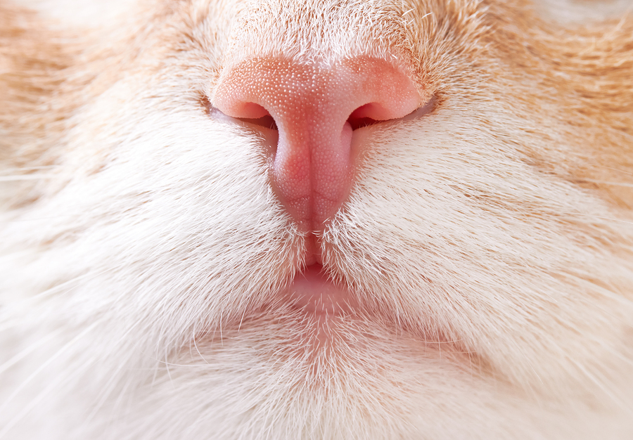

Doenças
Gatos também podem apanhar doenças e com essas doenças eles precisam de ir para um verterinario para terem um tratamento. Eu vou referir doeças mais comuns dos gatos.
Lista das doenças mais comuns dos gatos
- Obesidade;
- Lipidose hepática;
- Diabetes;
- FIV (Imunodeficiência Viral Felina);
- FELV (Leucemia Viral Felina);
- Insuficiência renal;
- Cálculos renais;
- Doença do trato urinário inferior dos felinos (DTUIF);
- Lipidose hepática;
- Complexo Colangiohepatite.
Sintomas

Normalmente os gatos dão alguns sinais quando estão doentes e só é preciso prestar atenção aos comportamentos deles, e esses sinais são:
Os Sintomas
- Dormir mais do que o normal
- Ficam mais fracos
- Ficam mais insensível
- Ficam mais desanimados
- Ficam são apetite
Se o teu gato tem alguns destes sintomas é recomendado levar-lo a um veterinário e que o matanha bem hidratado